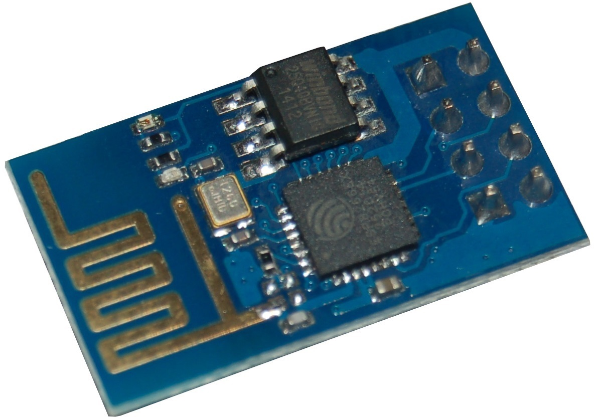
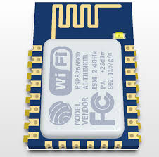

{kind=link}
{kind=link}

A new variant of the sensor and gateway node is the IOT sensor which is based on a Wifi node such as the ESP8266. This means ta the sensor does not use the 433MHz or 868MHz frequency band to transmit sensor values but uses the 2.4GHz Wifi band and a proper IP connection to send (temperature) values.
This opens new possibilities: It may be possible to combine certain functions of the Raspberry and the Arduino for the LamPI environment. For example, If the ESP would be able work wih 433MHz receivers and transmitters it would be possible to receive messages coming from the LamPI daemon and send back received sensor readings to the daemon.
But first, let's start with the simple stuff, the family tree :-)
There are several types of ESP 8266 boards available. They differ in the amount of memory and IO channels/pins available to the user.
I started with the ESP-01 version which is the simplest and cheapest board. It has only 2 IO ports. It's pin out is difficult, it has 2.54 mm pin spacing but two rows of 4 pins close to eah other make use of breadboards impossible without doing a little soldering (making a different connection).

On Ebay its specifications are as follows:
SDIO 2.0, SPI, UART
32-pin QFN package
Integrated RF switch, balun, 24dBm PA, DCXO, and PMU
Integrated RISC processor, on-chip memory and external memory interfaces
Integrated MAC/baseband processors
Quality of Service management
I2S interface for high fidelity audio applications
On-chip low-dropout linear regulators for all internal supplies
Proprietary spurious-free clock generation architecture
Integrated WEP, TKIP, AES, and WAPI engines
Supports APSD for optimal VoIP applications
Patented spurious noise cancellation algorithm for integration in SOC applications
Supports Bluetooth co-existence interface
Self-calibrated RF to ensure optimal performance under all operating conditions
Zero factory tuning
No external RF components
Specifications:
802.11 b/g/n
Wi-Fi Direct (P2P), soft-AP
Integrated TCP/IP protocol stack
Integrated TR switch, balun, LNA, power amplifier and matching network
Integrated PLLs, regulators, DCXO and power management units
+19.5dBm output power in 802.11b mode
Power down leakage current of <10uA
Integrated low power 32-bit CPU could be used as application processor
SDIO 1.1/2.0, SPI, UART
STBC, 1×1 MIMO, 2×1 MIMO
A-MPDU & A-MSDU aggregation & 0.4ms guard interval
Wake up and transmit packets in < 2ms
Voltage: 1.8-3.8V
Standby power consumption of < 1.0mW (DTIM3)
Dimension:25 x 15 mm
Net weight:2 g
Package weight:12 g
| ESP01 | Arduino FTDI | |
|---|---|---|
| Vcc | Red |
3.3V |
| GND | Black | GND |
| UTXD | White | Rx |
| URXD | Yellow | Tx |
| GPIO0 | Green | |
| CH PD | Orange | Chip , |
| RST | Brown | Reset |
| GPIO1 | nc |
Because the ESP01 has only 2 GPIO pins available (GPIO0 and GPIO1), it's use is in general limited to a simple sensor node. The Dallas (OnWire) sensor DS18B20 would be a good candidate to use this little node for temperature measurements.
However, it's connector with 2 rows of 4 pins makes it difficult to connect this ESP01 device on a breadboard without building some sort of adapter board. And sources on the internet tell use we need 2 microswitches and a voltage regulator to use tis device reliably (and a FTDI adapter).
Because the ESP01 is so difficult to use on a breadboard I bought its elder brother the ESP12E. Although this device is a surface mounted device which requires all (if not more) of my soldering skills; once soldered on a separate board it should be easy to use.

As you can see, the main difference is that the ESP12 has much more possibilities to connect I/O as it has more free GPIO pins. This is what we want (as the pricedifference is low).
I had hoped that this board would make the ESP12 easy to work with, but I keep having trouble with the Serial connections, and after uploading the firmware the device will not always boot correctly and the Serial connection is difficult to deal with. It may be hardware related, but for the few Euro's I do not plan to spend too much time on finding the root cause of my problems. I first like to have a working environment so that at least I know that it works and have a prototype environment. After that, debugging is much easier as we have a working environment to compare with.
So, as this boards did not work reliably on my PC I have opted for a third option to start with. But what would then the most simple way to start with the ESP8266?
This small board (and new ones are even smaller) can be connected to the computer with a micro USB cable and can be programmed without an extra FTDI interfaces or other additional hardware. I must say, getting these boards to work: powering, reset, upload sketches and monitor execution is a piece of cake compared to the bare chips...
I have to see if I can make these boards energy efficient so they can be powered by battery, which would make this sensor solution even more versatile. However, even without battery operation it is a good solution for sensors that are remote to our house.

As we plan to use the Arduino IDE to program the devices, we need to know the correct pin numbering in order to make sure we can talk with sensors. Below you find the pinout for the NodeMCU board (nice picture thanks to Arduining.com, click on picture to enlarge). So it tells us that if we wish to use GPIO2 for the OneWire bus that we need to use the fifth physical pin (D4) on the board.

I built an ESP sensor sketch so it is easy to setup and manage. And as there are een smaller versions available of the same nodeMCU 1.0 board for only $4.00 from Aliexpress.com i see no immediate reason to work with the ESP01 bare device at the moment.
As said above, I think the safest and easiest way to stat with the ESP boards is by buying a ready-to-go nodeMCU 1.0 board on Ebay.com or Aliexpress.com. Connect that board with a micro USB cable (same as for phones) to your computer and start installing the IDE.
There are many people that have no problem whatsoever with PC's, but I found that my iMac and Ubuntu Linux machine provide the best and most reliable results here (and yes I do have a High-End I7 laptop at home, but it gives me problems).
http://arduino.esp8266.com/stable/package_esp8266com_index.jsonYou're all set to start the ESP IDE.
Unfortunately, when you use the environment for both Arduino and ESP development there are a few things that you have to change and some others you have to be aware of:
The size of variables is different between the Arduino environment and the ESP8266 environment. The ESP is a 64-bit machine and therefore uses a larger word-size. This is particularly interesting with integer variables if they are used in drivers or interrupt routines. Bit operations assuming the size of variables might fail if those variables are twice as long. So, for example modify the standard BMP085 library (if you include my LamPI environment it's been done already) and change as follows:
The numbering and identification of GPIO pins is different between the two machine architectures:
| GPIO | PIN | Function |
|---|---|---|
| GPIO0 | D3 | 433 Receiver |
| GPIO1 | TX | -- nc |
| GPIO2 | D4 | -- nc (Usable for interrupts as well) |
| GPIO3 | RX | -- nc |
| GPIO4 | D2 | SDA I2C |
| GPIO5 | D1 | SCL I2C |
| GPIO6 | ||
| GPIO7 | ||
| GPIO8 | ||
| GPIO9 | ||
| GPIO10 | ||
| GPIO11 | ||
| GPIO12 | D6 | ONE WIRE |
| GPIO13 | ||
| GPIO14 | D5 | |
| GPIO15 | D8 | |
| GPIO16 | D0 | 433Transmitter |
| 0 | SDA I2C on ESP01 | |
| 2 | SCL I2C on ESP01 |
The above pin mappings are used on the nodeMCU1.0 board and also works on the Wemos D1-mini board.
The LamPI gateway sketch makes use of the interrupt system. The pin to interrupt system of the ESP is different from that of the standard Arduino system. In order to have the standard bahaviour of ArduinoGateway and ESP-Getaway be the same, we have to use GPIO0 for interrupt 0.
Remember that for standard Adruino, interrupt 0 is mapped upon pin D2. For the ESP8266 all interrupts pins are the same pins as the GPIO. This means for example that when using the InterruptChain libray we must either choose a pin for our receiver with a number lower than 6 or we have to make modifications to the library...
| GPIO | Pin | Interrupt | Description |
|---|---|---|---|
| 0 | D3 | 0 | GPIO0 is mapped in interrupt 0 |
| 2 | D4 | 2 | GPIO2 is mapped in interrupt 2 |
| etc |
As the IDE seems to be taking the standard libraries first and then the ESP specific libraries, we have a problem. In some cases you can make definitions that are dependent on the hardware architecture, but you do not always want to open all standard libraries and make changes. And should we make changes we have to be careful tha the libraries will still wok for the standard Arduino boards.
After all, when upgrading later to a new version of the IDE when it becomes available you would have to redo all those modifications to the new environment which is a cumbersome task (should you remember all changes you made)
And yes, I know that I added a conditional definition to one of the libraries in order to make it work ( think it was time.h) but cannot remember anymore. Embarassing ... but I'll document it later if I see it again.
Although we cannot see it when programming the IDE, the ESP8266 board is running far more (and complex) code in the background while executing our sketches. Therefore there are several things to keep in mind:
This was my first project with the ESP8266 (nodemcu 1.0) and it is not difficult. I may be lucky, but with the changes made as described above it was easy to build an ESP-based sensor node that work reliably. However, its use is rather limited: It does not offer any specific benefits over an Arduino based and battery powered node except for its capabilities to work anywhere we have a Wifi connection available.
In the default setup, the sensor will report its values over z websocket connection. The LamPI-node.js files has been changed in order to service these requests and as a result the sensors can be put on any place on earth as long as we have a reliable Wifi connection (So we need to know an SSID/password combination that works).
Read further on the ESP Sensor project
This is serious stuff: For a long time I thought it was nearly impossible to get this to work reliably, but in the end the project was successful. I started this project thinking that if we could combine the functions of a Raspberry slave with an Arduino Mega gateway node we would have a cheap replacement for a 40 + 10 euro setup.
However, on the Arduino we spent far too much time in interrupt handlers and we spend too much time in the main loop() as well. The ESP8266 is not forgiving if we do so. When spending more than 50ms in a routine the watchdog will reset the chip. So in our new ESP8266 setup we need to make sure that we either end the loop() within 40 ms or so, or add delay() statements in the loop if we do. And we must make sure to end interrupt service routines as soon as possible without calling any Wifi functions in these routines.
Read here further about the ESP Gateway project
Of course these devices can be battery operated. After all, similar stuff is in every mobile phone. However, those mobile phones are charged avery day or every other day, and that is not exactly what your are looking for when operating a sensor on a battery. The specifications tell us that the power usage is less than 1mA when stand-by, which is OK but not terrific. About 100uA would be far better for a battery powered device and would make the batteries last for a year or so.
And experiene shows that making a connection to the network and to the host in some cases can take a lot of time (for yet unknown reasons). And making these connection require most power. So if a node should wake up every minute o so and spends 15-30 seconds looking for the network or the host, battery operation will not work.
{kind=link}